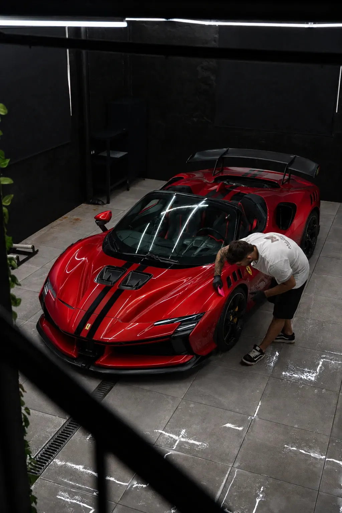

Car detailing premium · Marbella
Especialistas en
el cuidado de tu coche.
PPF·Tratamiento cerámico·Wrapping·Detailing
Reserva en menos de un minuto
Reserva tu cita.
Elige servicio, coche y día. Te respondemos hoy mismo por WhatsApp.
- Sin compromiso. Precio cerrado antes de empezar.
- Te respondemos hoy mismo con tu presupuesto.
- Calle Oro 32, Marbella · junto a la A-7.
¿Prefieres llamar? +34 672 93 63 98
Catálogo completo
Servicios
Toca un servicio para saber más.
Prueba nuestra explicación interactiva en 3D Ver en 3DCalidad certificada en cada instalación. Trabajamos con las mejores marcas del sector y respondemos por cada resultado.
Marbella Custom Cars · Calle Oro 32
¿Te lo has mirado todo?
Hablemos de tu coche
Déjanos tu teléfono y te preparamos un presupuesto a medida, sin compromiso.
Recibido
Te contactamos hoy mismo con tu presupuesto. Si prefieres no esperar, escríbenos ya.
Abrir WhatsAppDudas
Preguntas frecuentes
¿Por qué poner PPF?
Porque protege la pintura original de lo que ni la cera ni el cerámico pueden parar: las piedras de la autopista, los roces, los excrementos de pájaro, los insectos y la sal del ambiente. El PPF es una lámina gruesa de poliuretano transparente que recibe el golpe en lugar de la pintura. Las marcas finas de lavado se cierran solas con el calor del sol o con agua caliente, y la lámina filtra los rayos UV, así el color no se apaga con los años. En un coche de alta gama, la pintura de fábrica es lo que más valora un tasador: un frontal repintado baja el precio de venta, mientras que la lámina se retira cuando quieras sin dejar rastro. Puede ser brillo, que no se nota, o mate, que cambia el acabado sin tocar el color.
¿Qué es exactamente el detailing?
¿Cada cuánto conviene hacer un detailing completo?
¿Se puede quitar un bollo sin pintar?
¿En qué se diferencian PPF, wrapping y cerámico?
¿Cera o cerámico?
¿Por qué hay que pulir antes de sellar?
¿Cómo es el proceso?
- Diagnóstico. Revisamos el estado de la pintura y confirmamos el precio cerrado antes de empezar.
- Preparación. Lavado y descontaminación. Si la pintura lo necesita, corrección previa: lo que quede debajo se queda ahí.
- Instalación. Patrón cortado a la medida del modelo y aplicación en box cerrado, sin polvo.
- Entrega. Revisión pieza por pieza y tiempo de curado antes de que el coche salga.
¿Se nota que el coche lleva lámina?
Bien instalada, no. La lámina es transparente y los cortes se esconden en los cantos de cada pieza. Lo que sí se nota es el brillo: la superficie queda más lisa que la pintura desnuda.
¿Se puede quitar más adelante?
Sí, y esa es la gracia. Se retira con calor y la pintura de debajo aparece como el día que se aplicó. Por eso funciona tan bien en coches que se piensan vender.
¿Cuánto tiempo se queda el coche en el taller?
Depende de la cobertura y del estado de la pintura. Un sectorizado sale en el día; un full body ocupa el box varios días, sobre todo si hay corrección previa. Te damos la fecha de entrega al confirmar el presupuesto.
¿Puedo lavarlo como siempre?
Sí, con lavado a mano y pH neutro. Lo que conviene evitar son los túneles de rodillos y las pistolas a presión muy cerca de los cantos. Te explicamos el mantenimiento al entregar el coche.
¿Y si la pintura ya tiene arañazos?
Se corrigen antes. La lámina sella lo que haya debajo, así que cualquier marca que no se trate queda ahí dentro para siempre. En el diagnóstico te decimos si hace falta y cuánto suma.
¿Sirve también para embarcaciones?
Sí. Aplicamos PPF en barcos y motos de agua, donde el sol y la sal son todavía más agresivos que en carretera. Se presupuesta aparte, según la eslora y las zonas a cubrir.
Qué hace falta
A la hora de lavar
A la hora de secar
Qué evitar siempre
Dónde estamos
Polígono La Ermita, Marbella
5,0★★★★★en Google
Lo que dicen los clientes
Reseñas en Google
¿Has pasado ya por el taller?
Déjanos tu reseña
Un minuto de tu tiempo ayuda a que otros encuentren el taller.
Dejar una reseña en Google